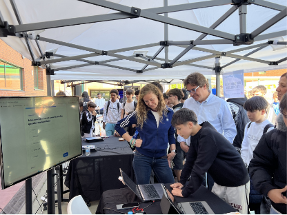
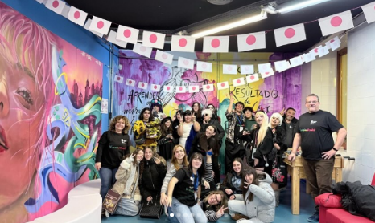
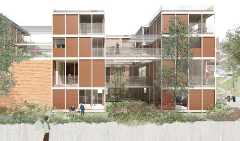

El concejal de infancia y juventud de Fuenlabrada, Javier González Castro, nos cuenta su labor y su ambiciosa visión para la ciudad. Con numerosos proyectos como OnFuenla, hablamos sobre cómo se busca llevar los muchos recursos municipales a los jóvenes; los retos de una ciudad que quiere apostar por la vivienda joven y un ocio saludable. En esta entrevista, Javier González reflexiona sobre lo importante que es que sean los propios jóvenes los que tomen las riendas de la ciudad y diseñen el futuro que quieren.
PAULA (Entrevistadora): Buenos días, concejal. Muchísimas gracias por estar aquí con En Clave de Fuenla hoy. Me ha sorprendido mucho, a raíz de preparar la entrevista, la cantidad de programas que ofrece la concejalía. ¿Por qué no empezamos por ahí? ¿Qué proyectos están funcionando muy bien?
Javier González Castro: Muy buenas, Paula. Yo encantado de poder estar aquí contigo hoy y contarte un poquito más de Fuenlabrada y concretamente las cosas que hacemos desde la concejalía de Juventud. Es verdad que siempre Fuenlabrada se ha caracterizado por tener un carácter muy participativo y en la concejalía de Juventud pues llevamos la misma estrategia y el mismo fin.
Yo llevo muy poquito, llevo apenas dos meses y medio. Es verdad que para mi son todo cosas nuevas y la verdad que la primera impresión me he quedado súper sorprendido, como tú decías, de la cantidad de cosas que se hacen en la ciudad pero que los jóvenes desconocen. Entonces al final es un poco trabajar en que todas esas cosas que hacemos, muy positivas, pues que tengan alcance para que los chicos y chicas de la ciudad puedan disfrutar.
P: ¿Crees que ese es el principal reto que tiene la concejalía? Ya no tanto los recursos que tiene, sino el hecho de que llegue a la gente, al público y que los conozcan. ¿Cómo estáis afrontando esa dificultad?
JGC: Pues mira, esta dificultad la estamos afrontando de que, con mi llegada, hemos hecho un análisis de lo que hace la concejalía de Juventud e Infancia en donde hemos visto que, por ejemplo, en la concejalía de Infancia hay una marca muy reconocida que en este caso es el FuenlisClub, o en la Casa de la Música donde nos encontramos, la gente lo visualiza y conoce sus recursos.
JGC: Si es verdad que, la parte de Juventud, creíamos necesario generar una nueva marca en donde se pudiera englobar todas esas actividades que se hacen desde la concejalía y que nos están llegando. Para ello, hemos creado una nueva marca de Juventud que se llama OnFuenla, que al final trata de utilizar el ocio para poder hacer que conozcan los recursos municipales pero con una premisa muy clara: no esperar a que ellos vengan a la concejalía sino ir donde están los jóvenes.
P: Me parece muy adecuado porque, creo que muchas veces, se siguen utilizando los medios tradicionales y no se llega a estas nuevas generaciones. ¿Cómo estáis notando que es la respuesta de la juventud ante estas publicaciones?
JGC: El tema comunicativo a día de hoy es una herramienta súper poderosa, pero a la vez me parece mucho más potente, sobre todo en este proyecto es como lo hemos orientado, a hacer como una fase inicial y una fase de presentación del proyecto. Lo hemos llevado, o lo vamos a llevar, a todos los centros educativos de Fuenlabrada. Este pasado miércoles ya tuvimos el primer evento dentro del Instituto Carpe Diem.

La valoración que hemos recibido es muy positiva: hicimos más de 100 carnés jóvenes, en donde se multiplicó por tres o por cuatro lo que se hace normalmente en un mes. Tuvimos un montón de emails interesándose por actividades que ellos desconocían, y bueno, aquí en la casa de la música donde estamos, estuvieron aquí cinco o seis usuarios nuevos para aprender a tocar la guitarra y la batería.
P: Qué bien, una respuesta maravillosa ¿En cuántos centros tenéis pensado hacerlo?
JGC: Pues el tema es que lo vamos a hacer en 16 centros educativos aquí en Fuenlabrada. Durante el 2026 y el 2027 estaremos en los 16 centros educativos en donde podremos mostrarles lo que hacemos, qué recursos tienen a su alcance, con el objetivo de que los puedan aprovechar y que los puedan disfrutar. Al final yo entiendo que la política es eso, trabajar para la ciudadanía.
P: Si una persona por ejemplo lee esta entrevista o ve alguna de las publicaciones en redes ¿cómo llega a vosotros o cómo se informa de los programas que hay disponibles?
JGC: Tenemos una página web muy potente en donde aparecen todas las actividades que realizamos y todos los programas que hay.
Por otro lado, dentro de la organización de la concejalía, tenemos un equipo que se dedica exclusivamente a la parte de comunicación y a dar respuesta a todos los usuarios y usuarias. Creo que es una cosa que diferencia Fuenlabrada: tienen las puertas abiertas del espacio joven para que puedan hablar con los técnicos o incluso conmigo mismo, porque yo creo que tengo que estar disponible y para todo el mundo.
P: ¿Cómo funciona el equipo de la concejalía? ¿Cómo es un día yendo a la oficina?
JGC: Pues mira, tú entras a la concejalía de Juventud e Infancia y lo primero que ves es gente con mucha pasión por lo que hace. Hay equipos de programación cultural, de comunicación, de infraestructura... También tenemos un equipo de Europa, donde Fuenlabrada se está caracterizando por esos proyectos que dan la oportunidad a jóvenes de la ciudad a poder disfrutar de Erasmus y experiencias fuera de su país. Al final es organizar actividades, diseñar, dar respuesta a las inquietudes de los jóvenes y es verdad que es un trabajo bonito. Yo, en este caso, estoy súper orgulloso de poder liderar al equipo y poder trabajar con ellos codo a codo.
P: ¿Qué inquietudes habéis notado hablando con la juventud? ¿Qué preocupaciones estáis viendo que tiene, ahora mismo, la juventud de Fuenlabrada?
JGC: Pues mira yo creo que, a día de hoy, vivimos en una situación complicada para los jóvenes por la vivienda, pero también hay muchas dudas acerca del futuro: "¿qué quiero ser de mayor?", "¿hacia dónde quiero tirar?". Creo que en esta parte las instituciones tienen que dar respuesta a ese tipo de problemas.
Pero también quiero poner en valor que creo que tenemos una juventud muy brillante, una juventud que no para de formarse. Tienen que dar un paso hacia adelante y reivindicar ese futuro que lo tienen inmediatamente, porque ya empiezan en el mundo laboral o están en momentos super decisivos en su vida. Yo siempre he pensado que hay que orientar tu vida con cosas que de verdad te motiven y con cosas que de verdad disfrutes haciéndolas.

P: Hay un montón de programas que tenéis que tocan diferentes cosas ¿Qué proyectos estáis viendo que tienen buena respuesta?
JGC: Yo creo que hay elementos como la música y el baile que creo que son como la joya de la corona. Pero también cada vez vemos más inquietudes por la cultura japonesa. Hace poquito hicimos la Japan Day en donde pudieron venir un montón de gente a disfrutar de actividades y es verdad que impresiona ver a 300 personas, todo el mundo bailando K-Pop.
JGC: También creo que el deporte es un movilizador de jóvenes y bueno, yo creo que eso dice mucho: en Fuenlabrada tenemos 10 asociaciones juveniles en donde cada una hace diferentes actividades y trabaja por y para la ciudad de una forma desinteresada; creo que ese es el gran éxito de Fuenlabrada.
P: ¿Hay algo que te gustaría o una necesidad que estás viendo de cara al futuro?
JGC: Pues es verdad que ahora mismo realizamos muchísimas actividades variadas para llegar a todo el mundo. Pero una de las cosas que me gustaría hacer dentro de la Concejalía es recuperar cosas que se hacían en el pasado que era un programa llamado todo por la noche donde se juntaban cientos de jóvenes bajo un deporte determinado mientras que estaban disfrutando con sus amigos en un entorno saludable y con música y baile; eso es algo que vamos a intentar recuperar.
P: ¿Os coordináis con el resto de concejalías para este tipo de actividades? Realmente hay muchas cosas que hacéis, hay que fomentar esa identidad y ese sentimiento de barrio.
JGC: Totalmente. Desde el Ayuntamiento tenemos una coordinación desde Ciudad Viva. Con la gran cantidad de actividades que se hacen dentro de la ciudad es inevitable que algunas puedan coincidir, pero se intenta que eventos muy señalados tengan su propia repercusión y se intenta dentro de la medida no pisar actividades para que la gente no tenga que elegir.
P: Hablando de repercusión ha sido bastante resonado el proyecto SHARE. ¿En qué consiste?
JGC: El proyecto SHARE es un proyecto piloto con fondos europeos en donde han sido elegidas 13 ciudades de Europa; es todo un orgullo que Fuenlabrada haya sido una de las elegidas. Consiste en rehabilitar espacios y convertirlos en apartamentos en donde puedan venir a vivir gente mayor a esos apartamentos con la intención de que puedan dejar sus casas en alquiler para que los jóvenes puedan alquilarlos. Al final es un proyecto que quiere también paliar la soledad de la gente mayor y a la vez poder ver una solución a la vivienda con unos precios asequibles.

P: A nivel de coste para la persona, porque estamos hablando de un proyecto que tiene fondos europeos, ¿qué sería?, ¿un precio que establece la persona que ofrece la vivienda o cómo funciona a nivel de coste?
JGC: El precio será fijado por el ayuntamiento en base a la normativa y a cómo estén los precios, pero al final es un acuerdo entre familias; en este caso, ayuntamiento y los dueños de las casas. El dinero va a ser para el dueño de la casa como tal. Todavía no está fijado al detalle, pero sí será algo asequible. A día de hoy, cualquier piso está entre 900 y 1.000 euros y es complicado poder irte a vivir solo.
Es un proyecto para mayores de 18 años empadronados en Fuenlabrada. Todavía está en fase de concreción, pero si hay más demanda que casas, se hará a través de un sorteo entre quienes cumplan los requisitos. Es un pasito más de Fuenlabrada; un proyecto piloto que ojalá en el futuro no sean 20 casas, sino muchas más, para que la gente pueda hacer su proyecto de vida.
P: Cambiando un poquito de tema... Me ha llamado mucho la atención que habéis apostado mucho por los espacios reducidos para actividades jóvenes. ¿Qué os ha hecho decidiros por esto?
JGC: Es verdad que la política de la concejalía era estar en espacios pequeños para llegar a todo el mundo de forma continuada. Pero con mi llegada y el proyecto OnFuenla, esa idea se va a ver modificada. Entendemos que las actividades tienen que ser grandes, tienen que congregar a muchísima gente.
Va a haber un formato de gran evento, aunque seguiremos apostando por lo pequeño para que el proyecto sea estable. No pueden ser acciones de cada uno o dos meses; tiene que haber un programa estable con formaciones, masterclass, charlas o campeonatos de K-Pop. Lo grande hace que los chavales digan: "Qué guapo lo que está haciendo la Concejalía", y ese atraer a lo grande hará que lo pequeño también tenga éxito.
P: ¿Cómo convive esta oferta municipal con el ocio privado de la ciudad?
JGC: Convive de una forma súper natural. Cuando en el Tomás y Valiente hay un lleno absoluto por una obra de teatro, los locales privados de alrededor tienen mucha más clientela. Se intenta no pisar lo que hacen las empresas privadas, pero el ayuntamiento tiene que dar la opción a quien no se lo pueda permitir. La clave es la colaboración con las empresas, sobre todo el trabajo que hace el CIFE (Concejalía de Empleo). Es una de las razones por las que Fuenlabrada sigue creciendo.
P: Acabáis de anunciar los campamentos de verano con mucha oferta. Hacéis una separación entre infancia, adolescencia y juventud, ¿qué os ha animado a ello?
JGC: Cada edad tiene sus peculiaridades. No es lo mismo un campamento con niños de 8 años que con adolescentes de 18; hay una distancia muy grande. Creemos que esa diversificación es muy positiva. Además de los nuestros, están los que lanzan las asociaciones juveniles, que son muchísimos. Animo a la gente a que busque la información en la web, porque los propios monitores pertenecen a las asociaciones y se disfruta mucho.
P: ¿Qué actividades crees que van a gustar más este verano?
JGC: Habrá piscinas, ríos, gincanas... los profesionales programan para que desde las 9 de la mañana hasta las 10 de la noche no paren. Y sumamos las Fuenlicolonias, un recurso para que las familias concilien desde que termina el colegio hasta septiembre. Ayudamos con precios económicos para que los padres trabajen tranquilos mientras sus hijos están bien cuidados. Es un recurso con muchísimo éxito.
P: Estás lleno de energía. Acabas de entrar en el puesto, ¿cómo ha sido ese proceso de onboarding con el equipo?
JGC: Si me dicen hace tres años que hoy voy a ser concejal de Juventud e Infancia de mi ciudad, donde he nacido y crecido, no me lo hubiera imaginado. Afronto el reto con mucha ilusión, intentando ser yo mismo. He tenido mucha suerte porque hay un gran equipo detrás con muchísima experiencia. Disfruto con lo que hago y mi experiencia pasada ya iba relacionada con trabajar con jóvenes.
P: ¿Cómo te gustaría ver la concejalía dentro de cuatro o cinco años?
JGC: Sueño con una juventud participativa, donde las decisiones no sean solo del equipo interno, sino en colaboración con los jóvenes. Queremos que los "embajadores" del proyecto en los institutos sean los representantes de las políticas que queremos crear. Que los jóvenes construyan su propia ciudad y nosotros les acompañemos.
P: ¿Qué legado te gustaría dejar?
JGC: Que se me recordase como alguien que hizo cosas positivas por la juventud y por Fuenlabrada. Que la gente con la que comparto esta aventura me recuerde como alguien importante en sus vidas. Este puesto me da la oportunidad de conocer mucha gente valiosa que trabaja por su ciudad.